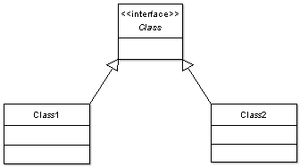
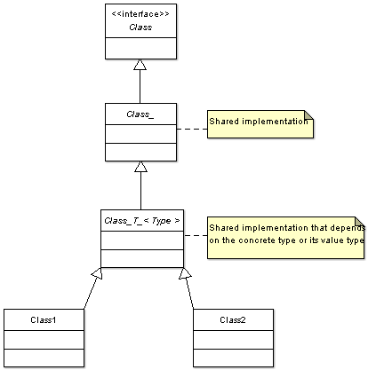
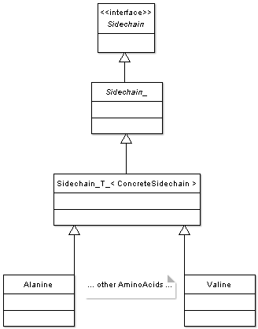

| libRosetta uses class hierarchies both to capture type relationships and to share code where possible among related types. Even a simple class hierarchy such as shown at right expresses a useful type relationship that lets us write some general functions in terms of the abstract base class that will work correctly on both types of concrete objects.
At the top of most libRosetta class hierarchies is a very lightweight abstract class with no data members or function bodies that we call an interface class. By writing clients of a hierarchy to an interface class we maximize the decoupling from the details of our class, lowering its maintenance and its compile time. When you want to use an interface at the top of the hierarchy and also take advantage of data and implementations that some or all of the concrete classes share you can end up with a hierarchy such as that shown at right where you have some intermediate abstract classes below the interface where the shared content is held. In this example we have some shared content that is independent of the concrete type in the Class_ class and below that a class template, Class_T_, where the template argument passed by the concrete Class1 and Class2 is either themselves or the type of data they hold. Class_T_ can hold the data and implementations that depend on the concrete type: this is a powerful idiom for code sharing (sometimes known as the "Curiously Recurring Template Pattern") but can look odd if you aren't familiar with it. This is used in the Sidechain class hierarchy, also shown at right. We use class names ending in a '_' character for these intermediate abstract classes to indicate that they are internal details that users do not generally need to look at. Many of the higher level libRosetta classes are organized as shown below at right with a chain of interface classes that can branch down into multiple class hierarchies. In this example we elaborate on the classes under the Residue interface. This design gives us a lot of expressive power while keeping low coupling, but it does require a lot of small class header files that can obscure the relative simplicity of the type relationships. This is why we use a fairly fine-grained directory and namespace organization that separates out a lot of the details into directories named internal and files/classes with trailing '_' character names. |



|
libRosetta Class Design

Support | ©2007 Rosetta Commons